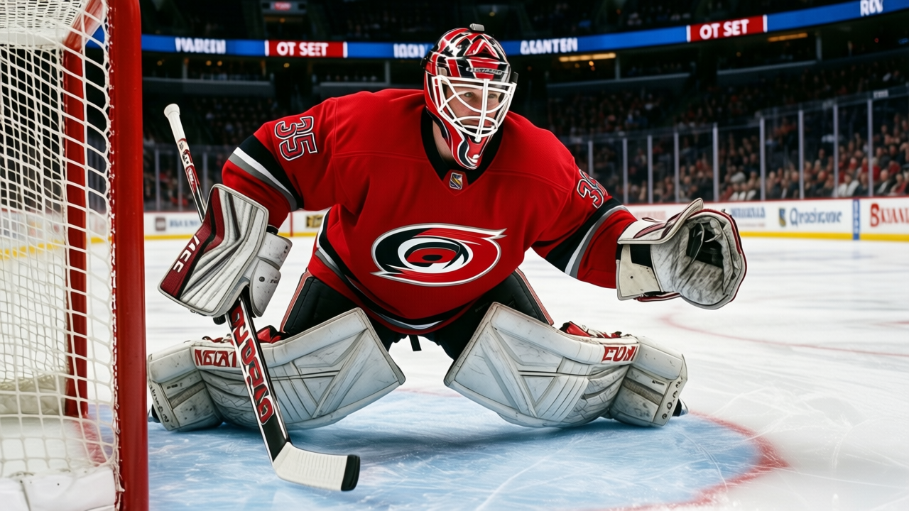

Notes from the Southeast: Carolina has lost 8 in overtime, more than any other club
The Hurricanes lead the Southeast at 50 points, but their overtime record is the worst in the league and the injuries are hitting the back end
 Ray CallumSenior correspondent · Home Ice Network
Ray CallumSenior correspondent · Home Ice Network
 Carolina Hurricanes sit first in the Southeast with 50 points. They also own 8 overtime losses, the most in the league, one more than
Carolina Hurricanes sit first in the Southeast with 50 points. They also own 8 overtime losses, the most in the league, one more than  Mighty Ducks of Anaheim. Every one of those 8 games went to the extra frame, and the Hurricanes walked away with a single point each time.
Mighty Ducks of Anaheim. Every one of those 8 games went to the extra frame, and the Hurricanes walked away with a single point each time.
Carolina is 14-6 at home, one of the best records in the East. On the road, they are 7-10. Most of those overtime defeats came away from Raleigh, where the team that should protect a lead and close the game instead carries it to a shootout of 3-on-3. The Hurricanes have the puck in the other end during regulation but cannot kill the clock when it matters.
 Rod Brind'Amour83 has been out since before December 1 with a back, returning January 22. That is 53 days of the team's best two-way center missing the closing minutes.
Rod Brind'Amour83 has been out since before December 1 with a back, returning January 22. That is 53 days of the team's best two-way center missing the closing minutes.  Sean Hill79, the top-pairing defenseman who eats the hardest defensive minutes, is out with a hip until January 16. Those are the two men who take the last faceoff in their own end. Without them, Carolina keeps going to overtime and keeps losing it.
Sean Hill79, the top-pairing defenseman who eats the hardest defensive minutes, is out with a hip until January 16. Those are the two men who take the last faceoff in their own end. Without them, Carolina keeps going to overtime and keeps losing it.
The goalies have not helped.  Kevin Weekes90 has started 30 of 37, carrying 81 percent of the load. He is solid but not a steal-a-game goaltender in the extra frame, and the backup situation behind him is thin:
Kevin Weekes90 has started 30 of 37, carrying 81 percent of the load. He is solid but not a steal-a-game goaltender in the extra frame, and the backup situation behind him is thin:  Arturs Irbe77 at 8 games and Marcel Janota73 at 1.
Arturs Irbe77 at 8 games and Marcel Janota73 at 1.
Carolina gives up 139 goals in 37 games, which is middle of the pack. They score 149, which is not bad. Eight overtime defeats in 37 games is the shape of the problem, and no team survives that rate in April.
The schedule in front of them is punishing: Buffalo on January 3, Boston on January 4, then  Atlanta Thrashers and
Atlanta Thrashers and  New York Rangers on January 7 and 8. Four games in six days, all against clubs fighting for playoff position. If Brind'Amour and Hill are not back by then, this overtime problem gets worse before it gets better.
New York Rangers on January 7 and 8. Four games in six days, all against clubs fighting for playoff position. If Brind'Amour and Hill are not back by then, this overtime problem gets worse before it gets better.
Darryl Sutter was asked about the overtime streak in Calgary's building on December 28 after watching his old team's division rival. "You don't get out of it by feeling sorry," he told The Tunnel's Jan Kowalczyk.